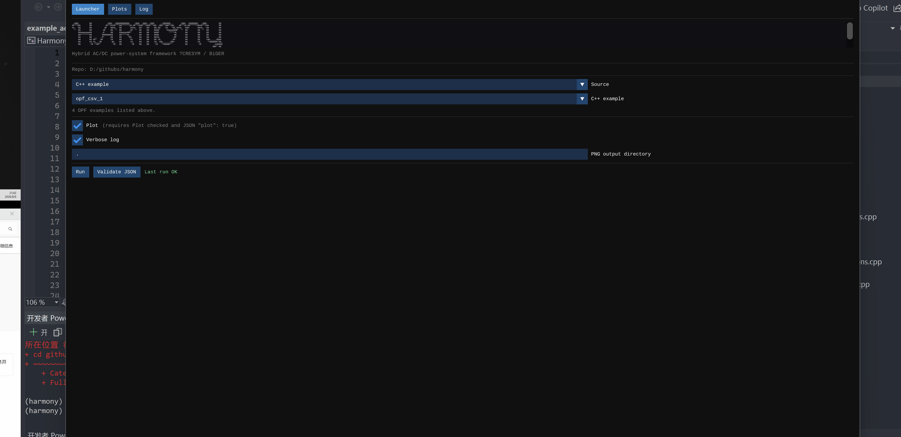

Media
Demos and recordings
Short clips of the open RTDS models and the Harmony toolbox running.
Media
Short clips of the open RTDS models and the Harmony toolbox running.
Real-time demos of the open RSCAD/RTDS library. HVDC RTDS models · GitHub ↗
Aleksandra Lekić’s lecture in the TU Delft edX course Technology of Intelligent and Integrated Energy Systems (IIES01x).
Videos and slides by Aleksandra Lekić and Vaibhav Nougain. Newsletter features on the course reached more than 10,000 IES members. IEEE IES MOOC model library
Graphical interface while a simulation is running. Harmony toolbox · GitHub ↗
